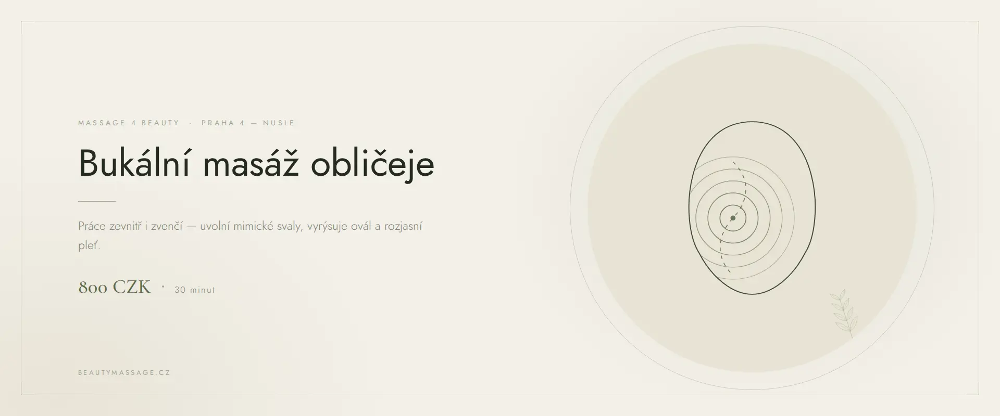

Masáž obličeje · Praha 4
Bukální masáž obličeje Praha
Masáž vedená zevnitř úst — jediná technika, která se dostane přímo ke žvýkacím svalům. Nejúčinnější způsob, jak zpevnit ovál a uvolnit letitě zatnutou čelist.
Co je bukální masáž
Bukální masáž — někdy nazývaná intraorální — je technika, při které masíruji obličejové svaly zevnitř dutiny ústní, ve sterilních rukavicích. Zvenčí se totiž k žvýkacím svalům nelze dostat: leží pod několika vrstvami tkáně a právě ony nejvíce ovlivňují tvar dolní části obličeje.
Když jsou tyto svaly roky ve stažení — ze stresu, zatínání zubů nebo bruxismu — obličej se opticky rozšiřuje, ovál se ztrácí a nosoretní rýhy se prohlubují. Bukální masáž je uvolní přímo u zdroje. Proto po ní bývá výsledek tak výrazný.
Jak bukální masáž probíhá
- Příprava a hygiena Odlíčím pleť, nasadím sterilní rukavice a vysvětlím, co budete cítit.
- Uvolnění zvenčí Nejprve masáž tváří, čelisti a spánků zvenku, aby svaly nebyly v šoku.
- Vlastní bukální práce Prsty pracují zevnitř úst, druhá ruka drží tkáň zvenčí. Tlak je hluboký a pomalý.
- Lymfodrenáž a zklidnění Závěrečná drenáž odvede uvolněnou lymfu a zklidní prokrvenou pleť.
Účinky bukální masáže
- výrazné zpevnění a zúžení oválu obličeje
- vyhlazení nosoretních rýh
- uvolnění zatnuté čelisti a úleva při bruxismu
- zmenšení napětí ve spáncích a méně častější bolesti hlavy
- zvednuté koutky úst a plnější rty
- zlepšení pohyblivosti čelistního kloubu
Pro koho je vhodná
Bukální masáž obličeje je ideální, pokud zatínáte zuby, cítíte tuhou čelist, trpíte bolestmi čelistního kloubu nebo se vám opticky rozšířila dolní část obličeje. Vyhledávají ji i klientky, kterým povrchové masáže obličeje nepřinesly dost výrazný výsledek.
Kdy masáž neprovádíme
- záněty v dutině ústní, afty nebo opary
- čerstvý zákrok u zubního lékaře nebo implantát v hojení
- akutní zánět čelistního kloubu
- čerstvě aplikovaná výplň v oblasti tváří (počkejte 2–3 týdny)
- horečka a akutní onemocnění
Nejste si jistí? Zavolejte mi před rezervací na +420 721 761 411 a probereme to.
Cena bukální masáže
Časté dotazy
Kolik stojí bukální masáž v Praze?
Bukální masáž obličeje stojí 800 Kč za 30 minut. Často ji klientky kombinují s masáží obličeje na 60 minut.
Bolí bukální masáž?
Tlak je hluboký a v prvních minutách bývá nepříjemný, protože žvýkací svaly jsou obvykle hodně stažené. Postupně se uvolní a masáž se stává příjemnou. Intenzitu vždy přizpůsobím.
Je bukální masáž hygienická?
Ano. Pracuji vždy ve sterilních jednorázových rukavicích a před masáží dostanete ústní vodu k vypláchnutí.
Kolik masáží je potřeba?
Rozdíl uvidíte hned po první. Pro trvalejší zpevnění oválu doporučuji sérii 5 až 8 masáží jednou týdně.
Můžu po masáži normálně jíst?
Ano. Někdy je čelist pár hodin mírně unavená, jako po delším žvýkání. Do druhého dne to odezní.
Objednejte se na bukální masáž
Studio najdete v Praze 4 — Nusle, kousek od Pankráce a Vyšehradu. Online rezervace zabere minutu.